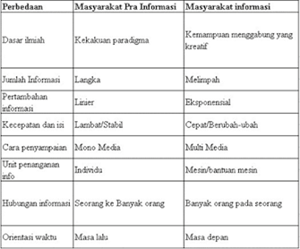

CIRI-CIRI MASYARAKAT DENGAN TEKNOLOGI INFORMASI MODERN
Pada pertengahan abad 20, kata informasi diadopsi sebagai istilah teknis (terutama sebagai teori
informasi) dalam perhitungan keandalan insinyur dalam telepon dan sistem pensinyalan serupa. Perlu
diketahui bahwa masyarakat pra informasi dapat mengembangkan karakter kolektifnya dengan cara
melakukan kegiatan bersama dan berkomunikasi. Sangat tidak tepat jika kita beranggapan bahwa
masyarakat informasi lebih istimewa atau luar biasa dibandingkan dengan masyarakat pra informasi.
A. Perbedaan Masyarakat Informasi dan Pra Informasi
Penggunaan internet pada masyarakat era informasi memiliki efek independen dibandingkan masyarakat
pra informasi pada pola penggunaan, termasuk hiburan, pencarian informasi, dan produksi konten,
bahkan ketika mengendalikan variabel demografis utama. Masyarakat era informasi lebih cenderung
menggunakan internet lebih intensif untuk membuat konten, menghibur dan menginformasikan diri mereka
sendiri, daripada masyarakat pra informasi.
Ada yang disebut sebagai kelompok masyarakat pra informasi, mereka adalah masyarakat yang tidak atau
belum menjadikan suatu informasi sebagai sumber utama. Biasanya mereka tidak melihat pengaruh
menonjol suatu informasi dalam kehidupan mereka.
Berikut merupakan tabel perbedaan masyarakat informasi dengan masyarakat prainformasi:

B. Ciri - Ciri Masyarakat Informasi
Adapun ciri-ciri masyarakat informasi adalah sebagai berikut:
-
Menjadikan internet sebagai infrastruktur kehidupan sehari-hari
-
Informasi menjadi sumber utama dalam dunia usaha
-
Informasi menjadi aset bagi siapa saja
-
Terdapat sistem pelayanan online
-
Adanya persaingan yang ketat dan bersifat global
-
Proses pertukaran informasi yang sangat cepat
-
Menjadikan informasi sebagai pendongkrak berkembangnya usaha
-
Menggunakan informasi sebagai pertimbangan untuk mengambil suatu keputusan.
-
Terjadinya komunikasi hampir secara instan melintasi jarak yang begitu jauh.
-
Cepatnya proses penyerapan informasi
-
Menjadikan informasi sebagai salah satu komoditi ekonomi yang memiliki harga
-
Tingginya nilai ketergantungan terhadap informasi
-
Tingginya tingkat responsibilitas terhadap informasi
-
Pola hidup atau kehidupan sosial bisa dipengaruhi oleh informasi
-
Masyarakat cenderung bersifat lebih demokratis
-
Cara mengakses informasi berubah dari media cetak ke media online
Adapun sifat-sifat masyarakat informasi sebagai berikut:
-
Faktual atau fakta, sifat informasi yang ini kebenarannya dapat dipercaya, karena informasi
yang bersifat fakta memiliki bukti atau rekam jejak atas pengumpulan datanya dan pengolahan
datanya.
-
Terupdate, sudah seharusnya masyarakat informasi mendapatkan suatu infromasi berdasarkan
kejadian terkini. Hal ini dapat menghindari informasi bagi masyarakat yang tidak mengakses
sebuah informasi terbaru.
-
Penambah ilmu pengetahuan, informasi yang ada harus benar-benar memberikan tambahan pengetahuan
bagi masyarakat pengguna informasi.
-
Korektif, sebuah informasi seharusnya dapat dijadikan sebagai salah satu sumber rujukan bilamana
masyarakat sangat membutuhkan informasi untuk bahan referensi.
C. Pengaruh Informasi Terhadap Masyarakat
Cepatnya laju perkembangan informasi tidak terlepas dari berkembangnya teknologi informasi.
Masyarakat dapat mengakses informasi kapan saja dan di mana saja. Mudahnya mengakses informasi juga
menimbulkan dampak terhadap masyarakat.
-
Dampak positif teknologi informasi :
-
Arus informasi sangat cepat sehingga masyarakat tidak ketinggalan informasi.
-
Masyarakat dengan mudah mengakses informasi kapanpun mereka mau.
-
Wawasan masyarakat terhadap perkembangan dunia semakin luas karena informasi-informasi yang
mudah diakses.
-
Mempermudah pelaku bisnis untuk berbisnis secara online.
-
Mempermudah masyarakat untuk berkomunikasi tanpa harus bertemu.
-
Dapat digunakan sebagai sarana mencari informasi untuk bidang pendidikan dan kebudayaan.
-
Sebagai sarana hiburan.
-
Dengan berkembangnya teknologi informasi dan teknologi komunikasi masyarakat lebih mudah
beraktifitas.
-
Wawasan masyarakat mengenai perkembangan teknologi makin luas.
-
Terbukanya peluang usaha yang memanfaatkan jaringan internet.
-
Memberikan ruang untuk berkreasi bagi masyarakat.
-
Dampak negatif teknologi informasi :
-
Berkurangnya proses sosialisasi secara nyata.
-
Kejahatan dunia maya meningkat.
-
Konten negatif yang berkembang dengan pesat.
-
Meningkatnya oknum yang memfitnah dan juga pencemaran nama baik.
-
Kecanduan terhadap internet bisa menyebabkan masyarakat tidak produktif.
-
Berkurangnya pola interaksi dengan orang sekitar.
-
Terjadinya pelanggaran privasi.
-
Sifat plagiat makin bertambah.
-
Pembajakan hak cipta suatu karya.
-
Perjudian online meningkat.
-
Meningkatnya aksi pornografi.
D. Penggunaan Teknologi Informasi Di Masyarakat
Didukung dengan teknologi modern membawa banyak keuntungan positif terhadap bidang aspek kehidupan masayarakat.
-
Bidang Perbankan
Proses transaksi perbankan bisa dilakukan secara online oleh nasabah bank, baik melalu mesin ATM, komputer maupun telpon genggam.
-
Bidang Perdagangan
Pelaku dagang bisa berdagang secara online.
-
Bidang Perindustrian
Manfaat teknologi informasi di bidang perindustrian yaitu penggunaan komputer untuk membantu melakukan pengolahan data.
-
Bidang Transportasi
Dengan adanya kemajuan teknologi, aspek kehidupan bidang transpotasi banyak berkembang. Mulai dari transportasi kelas bawah seperti ojek online hingga sistem pembelian tiket pesawat terbang yang menggunakan aplikasi online.
-
Bidang Kesehatan
Membantu rumah sakit untuk membangun sistem informasi yang mana bisa membagikan informasi kesehatan dengan rumah sakit lainnya.
-
Bidang Pendidikan
Salah satu cara dari instansi pendidikan untuk mendukung kegiatan belajar mengajar, selain metode tatap muka juga menggunakan metode online.
-
Bidang Seni
Pada komputer terdapat aplikasi untuk mengedit foto maupun video. Dengan menggunakan komputer foto atau video yang biasa-biasa saja bisa diedit menjadi foto atau video yang lebih menarik dibanding dengan aslinya.
-
Bidang Komunikasi
Pada saat ini, peralatan telekomunikasi seperti telepon genggam sudah banyak dimiliki oleh masyarakat. Komunikasi bisa dilakukan dengan lawan bicara dimanapun berada.
-
Bidang Pertahanan dan Keamanan
Komputer digunaan untuk mengendalikan sistem pertahanan. Komputer juga bisa digunakan untuk mengendalikan senjata. Selain itu pada bidang pertahana dan keamanan komputer bisa dijadikan sarana untuk melatih kemampuan tempur prajurit melalui simulasi pada komputer.